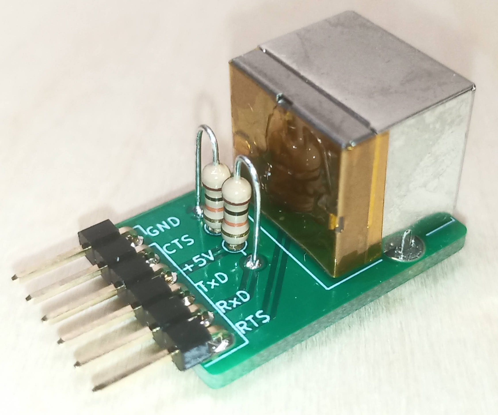
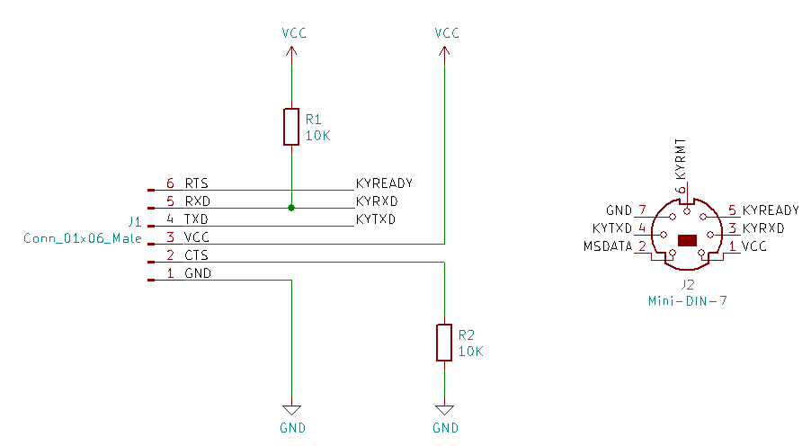
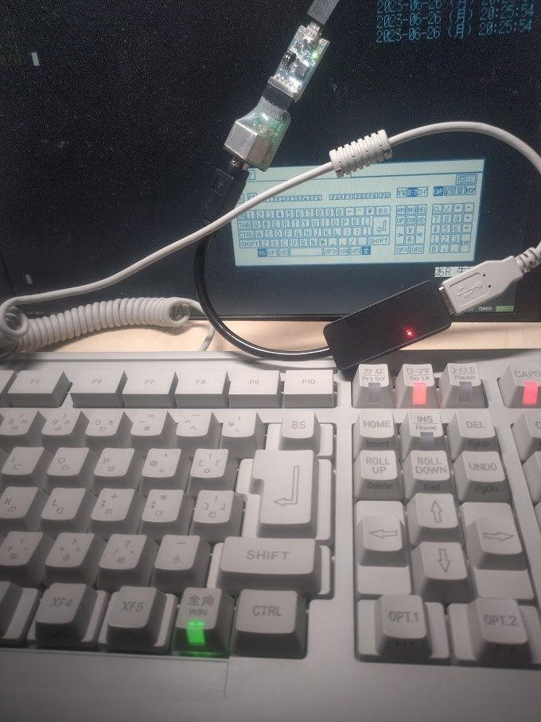

XM6 TrueKey USB

XM6および後継/派生のエミュレータにはTrueKeyと呼ばれる機能が搭載されています。
TrueKeyにより、X68000純正のキーボードを使ってXM6を利用する事ができます。
XM6 TrueKey USBは以下のような昨今のPC周りの事情:
- 標準でRS-232端子を備えないPCが多くなった
- RS-232のように±12Vでフルスイングするのではなく、5V系(いわゆるTTLレベル)で使うためのUSBシリアルアダプタが低価格で多く流通している
に合わせて、オリジナルのTrueKeyを改変したものです。
PI.様の許諾を得てプリント基板等を頒布しております。
ありがとうございます。
TrueKeyを使ってXM6以外の操作はできません。
Windows等でX68000純正キーボードをお使いになりたい場合、他の作者様による変換アダプタをご検討ください。
回路図

USBシリアル変換には既製品のUSBシリアルアダプタをそのまま利用します。
秋月電子通商扱いの AE-TTL-232R (M-11007) がお勧めです。
注意
無保証かつ無サポート
TrueKeyの開発は15年以上前に終了しています。
XM6の作者様や関係者様に決して質問や要望などしないでください。
XM6以外の操作はできない
TrueKeyではXM6以外の操作はできません。
Windowsやpx68kなどの操作には対応していませんし、対応予定も全くありません。
マウスは非対応
X68000キーボード側面にあるマウス端子には対応していません。
5V系アダプタ専用
USBシリアルアダプタはTTLレベルの入出力、かつ5V電源のものを使用してください。
これ以外のものを接続した場合、大切なキーボードやアダプタが故障します。
誤接続保護は無い
誤接続した場合、即破損する危険があります。
使用方法
接続手順
- USBシリアルアダプタはPCから取り外しておきます。
- USBシリアルアダプタの説明書を確認いただき、I/O電圧および電源電圧を5Vに設定します。
- X68000キーボード、TrueKey基板、USBシリアルアダプタを正しく接続します。
- USBシリアルアダプタをPCへ接続します。
設定手順
XM6のメニューバーの [ツール(T)] から
[オプション(O)] を選ぶと表示される
[XM6の動作設定] ウィンドウの
[TrueKey] タブを表示させます。
[ポート(P)] をUSBシリアルアダプタの番号へ変更すれば、他はデフォルトのままで動作する筈です。
応用編
実機向けキーボード変換機の開発
元々はこのために回路を作成しました。
XM6 TypeGの再現性は非常に高く、実機に頼らずとも、かなりの部分について開発を行うことができます。
キーボードの動作チェック環境として
貴重な実機を危険に晒さずに済みます。
USBアイソレータを追加しておけば更に安心でしょう。
X68000 Zのキーボードを使う

すきま工房様の USBキーボードアダプター for X680x0を介して
ZキーボードをTrueKey接続する(二重変換する)ことで、
- キーロック状態LEDが実機同様に灯るようになる
- OPT.2キーによってXM6側のマウスモードが意図せず切り替わるのを防ぐ
といった効果が得られます。
ただし、ZキーボードからはXM6以外を操作できなくなるため、ホストOS側を操作するために別のキーボードが必要です。